C64EMU
This site is work in progress. GitHub:
https://github.com/c64emu
ASSEMBLER
Assembly Code
Machine Code
Click on line numbers to set breakpoints.
EMULATOR

Assemble
Load
pc=?
© 2022 by Andreas Schwenk,
https://www.arts-and-sciences.com